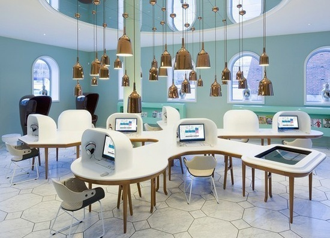

Deskripsi Laboratorium Komputer
Laboratorium Komputer di sekolah kami dilengkapi dengan perangkat terbaru untuk mendukung pembelajaran siswa. Ruangan ini dirancang untuk memberikan pengalaman belajar yang nyaman dan interaktif.
Gambar di atas menunjukkan suasana laboratorium komputer kami yang modern dan nyaman.
Fasilitas
- 40 unit komputer dengan spesifikasi tinggi.
- Proyektor dan layar besar untuk presentasi.
- Jaringan internet cepat dan stabil.
- Printer dan scanner untuk kebutuhan administrasi.
- Ruangan ber-AC untuk kenyamanan belajar.
Fasilitas tambahan seperti proyektor dan printer tersedia untuk mendukung kegiatan belajar mengajar.
Teknologi yang Digunakan
- Processor: Intel Core i5 generasi terbaru.
- RAM: 8GB DDR4.
- Storage: SSD 256GB untuk kecepatan akses data.
- Operating System: Windows 11 Education.
- Software: Microsoft Office, Adobe Creative Suite, dan aplikasi pembelajaran lainnya.
Setiap komputer dilengkapi dengan teknologi terbaru untuk memastikan performa optimal.